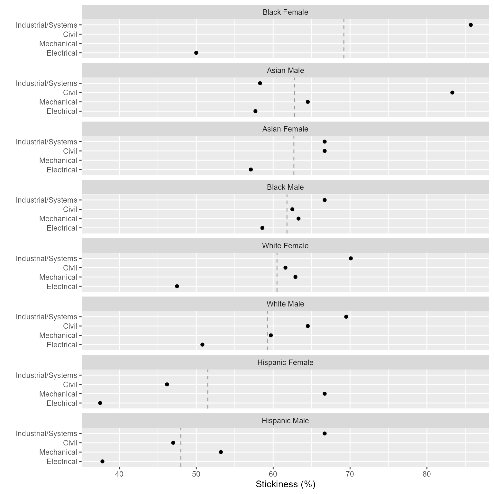
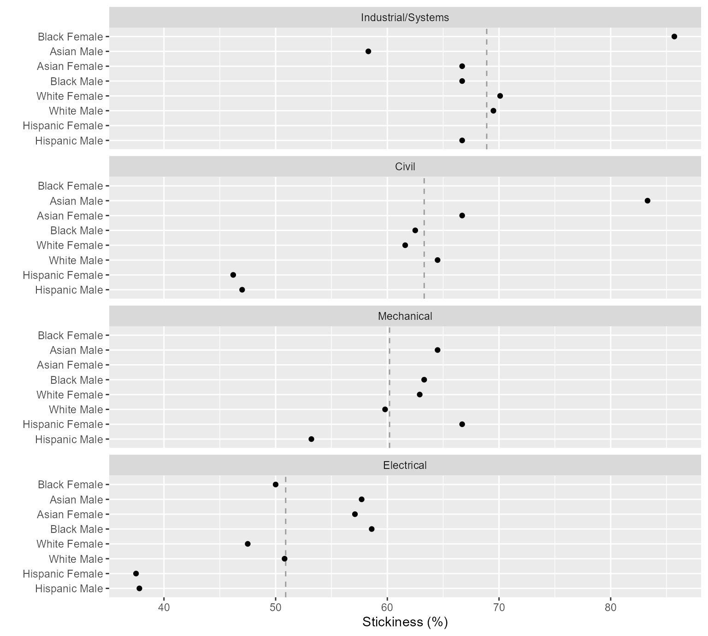

Case study part 3: Results
Source:vignettes/articles/art-003-case-results.Rmd
art-003-case-results.RmdOur goal in this segment is to group and summarize the observations we saved previously, calculate the stickiness metric, and display the results.
Reminder. midfielddata is for practice, not research.
Load data
Start. If you are writing your own script to follow along, we use these packages in this article:
Loads with midfieldr. Prepared data. View data dictionary
via ?study_observations.
-
study_observations(derived in Case study: Data).
Group and summarize
Initialize. Assign a working data frame.
# Working data frame
DT <- copy(study_observations)
DT
#> mcid race sex program bloc
#> <char> <char> <char> <char> <char>
#> 1: MCID3111142965 International Male EE ever_enrolled
#> 2: MCID3111145102 White Male EE ever_enrolled
#> 3: MCID3111146537 Asian Female EE ever_enrolled
#> ---
#> 8917: MCID3112618976 White Male ME graduates
#> 8918: MCID3112619484 White Male EE graduates
#> 8919: MCID3112641535 White Male ME graduatesThe study observations data frame is designed with one column for
each grouping variable: race, sex,
program, and bloc.
- grouping variables
-
Detailed information in the student-level data that further characterize a bloc of records, typically used to create bloc subsets for comparison, for example, program, race/ethnicity, sex, age, grade level, grades, etc.
Summarize. Count the numbers of observations for each combination of the grouping variables.
# Group and summarize
DT <- DT[, .N, by = c("bloc", "program", "race", "sex")]
DT
#> bloc program race sex N
#> <char> <char> <char> <char> <int>
#> 1: ever_enrolled EE International Male 195
#> 2: ever_enrolled EE White Male 864
#> 3: ever_enrolled EE Asian Female 21
#> ---
#> 96: graduates ME Native American Male 1
#> 97: graduates CE Native American Female 1
#> 98: graduates EE Other/Unknown Female 3Reshape
Reshape. Transform from block-record form to row-record form to set up the stickiness metric calculation. Transforms the N column into two columns, one for ever-enrolled and one for graduates. This operation is essentially a transformation from block records to row records—a process known by a number of different names, e.g., pivot, crosstab, unstack, spread, or widen (Mount and Zumel 2019). This step leaves the graphing variables (program, race/ethnicity, and sex) in place.
# Prepare to compute metric
DT <- dcast(DT, program + sex + race ~ bloc, value.var = "N", fill = 0)
DT
#> Key: <program, sex, race>
#> program sex race ever_enrolled graduates
#> <char> <char> <char> <int> <int>
#> 1: CE Female Asian 15 10
#> 2: CE Female Black 4 1
#> 3: CE Female Hispanic 13 6
#> ---
#> 48: ME Male Native American 5 1
#> 49: ME Male Other/Unknown 80 41
#> 50: ME Male White 1596 955Compute the metric
- metric
-
A quantitative measure derived from student-level data. Includes statistical measures such as counts of program starters or graduates as well as comparative ratios such as graduation rate or stickiness. Typically involves comparisons of specific blocs of students and programs.
- stickiness
-
Program “stickiness” \small(S) is the ratio of the number of graduates of a program \small(N_g) to the number ever enrolled in the program \small(N_e). S = \frac{N_g}{N_e}
Create a variable. Compute stickiness.
# Compute the metric
DT[, stickiness := round(100 * graduates / ever_enrolled, 1)]
setkey(DT, NULL)
DT
#> program sex race ever_enrolled graduates stickiness
#> <char> <char> <char> <int> <int> <num>
#> 1: CE Female Asian 15 10 66.7
#> 2: CE Female Black 4 1 25.0
#> 3: CE Female Hispanic 13 6 46.2
#> ---
#> 48: ME Male Native American 5 1 20.0
#> 49: ME Male Other/Unknown 80 41 51.2
#> 50: ME Male White 1596 955 59.8Verify prepared data. study_results, included
with midfieldr, contains the case study information developed above.
Here we verify that the two data frames have the same content.
# Demonstrate equivalence
check_equiv_frames(DT, study_results)
#> [1] TRUEPrepare for dissemination
We take several additional steps to prepare the data for dissemination in tables or charts.
Filtering. To preserve the anonymity of the people involved, we remove observations with fewer than \small N observations. When dealing with the full MIDFIELD research data, we typically use \small N = 10, but for these practice data, we use \small N = 3.
# Preserve anonymity
DT <- DT[graduates >= 3]
# Display the result
DT
#> program sex race ever_enrolled graduates stickiness
#> <char> <char> <char> <int> <int> <num>
#> 1: CE Female Asian 15 10 66.7
#> 2: CE Female Hispanic 13 6 46.2
#> 3: CE Female International 23 13 56.5
#> ---
#> 39: ME Male International 178 89 50.0
#> 40: ME Male Other/Unknown 80 41 51.2
#> 41: ME Male White 1596 955 59.8Note. MIDFIELD research findings are regularly grouped by program, race/ethnicity, and sex. However, applied to the practice data these groupings produce several groups with totals below the threshold we impose to preserve anonymity, introducing a number of NA values in the resulting charts and tables. These NAs are largely an artifact of applying these groupings to practice data.
Filtering. Let us assume that our study focuses on “domestic” students of known race/ethnicity. In that case, we omit observations labeled “International” and Other/Unknown”.
# Filter by study design
DT <- DT[!race %chin% c("International", "Other/Unknown")]
# Display the result
DT
#> program sex race ever_enrolled graduates stickiness
#> <char> <char> <char> <int> <int> <num>
#> 1: CE Female Asian 15 10 66.7
#> 2: CE Female Hispanic 13 6 46.2
#> 3: CE Female White 263 162 61.6
#> ---
#> 26: ME Male Black 30 19 63.3
#> 27: ME Male Hispanic 79 42 53.2
#> 28: ME Male White 1596 955 59.8Creating variables. We have found it useful to report such data with a variable that combines race/ethnicity and sex.
# Create a variable
DT[, people := paste(race, sex)]
DT[, c("race", "sex") := NULL]
setcolorder(DT, c("program", "people"))
# Display the result
DT
#> program people ever_enrolled graduates stickiness
#> <char> <char> <int> <int> <num>
#> 1: CE Asian Female 15 10 66.7
#> 2: CE Hispanic Female 13 6 46.2
#> 3: CE White Female 263 162 61.6
#> ---
#> 26: ME Black Male 30 19 63.3
#> 27: ME Hispanic Male 79 42 53.2
#> 28: ME White Male 1596 955 59.8Recoding values. Readers can more readily interpret our charts and tables if the programs are unabbreviated.
# Recode values for charts and tables
DT[, program := fcase(
program %like% "CE", "Civil",
program %like% "EE", "Electrical",
program %like% "ME", "Mechanical",
program %like% "ISE", "Industrial/Systems"
)]
# Display the result
DT
#> program people ever_enrolled graduates stickiness
#> <char> <char> <int> <int> <num>
#> 1: Civil Asian Female 15 10 66.7
#> 2: Civil Hispanic Female 13 6 46.2
#> 3: Civil White Female 263 162 61.6
#> ---
#> 26: Mechanical Black Male 30 19 63.3
#> 27: Mechanical Hispanic Male 79 42 53.2
#> 28: Mechanical White Male 1596 955 59.8With one quantitative variable (stickiness) for every combination of the levels of two categorical variables (program and race/ethnicity/sex), these data are multiway data (Cleveland 1993). How one orders the categorical variables is critical for visualizing effects.
- multiway data
-
A data set of three variables: a category with \small m levels; a second independent category with \small n levels; and a quantitative variable (the response) of length \small m \times n such that there is a value of the response for each combination of levels of the two categorical variables.
Conditioning. Convert the two categorical variables to ordered factors to support the ordering of rows and panels in the chart.
# Convert categorical variables to factors
DT <- order_multiway(DT,
quantity = "stickiness",
categories = c("program", "people"),
method = "percent",
ratio_of = c("graduates", "ever_enrolled")
)
# Display the result
DT
#> program people graduates ever_enrolled stickiness
#> <fctr> <fctr> <num> <num> <num>
#> 1: Civil Asian Female 10 15 66.7
#> 2: Civil Hispanic Female 6 13 46.2
#> 3: Civil White Female 162 263 61.6
#> ---
#> 26: Mechanical Black Male 19 30 63.3
#> 27: Mechanical Hispanic Male 42 79 53.2
#> 28: Mechanical White Male 955 1596 59.8
#> program_stickiness people_stickiness
#> <num> <num>
#> 1: 63.3 62.7
#> 2: 63.3 51.5
#> 3: 63.3 60.5
#> ---
#> 26: 60.2 61.8
#> 27: 60.2 48.0
#> 28: 60.2 59.4The column program_stickiness determines the order of
the programs in the chart; people_stickiness determines the
order of the race/ethnicity/sex groupings; the values in
stickiness are the quantitative values to be graphed.
Charts
In the first multiway chart, the rows are programs and panels are people, facilitating comparisons of different program for a single group. Rows and panels are both ordered from bottom to top in order of increasing stickiness.
- multiway chart
-
A multi-panel dot plot: horizontal, quantitative scales; rows that encode one category; and panels that encode the second category. All panels have identical axes. The ordering of the rows and panels is crucial to the perception of effects.
ggplot(DT, aes(x = stickiness, y = program)) +
facet_wrap(vars(people), ncol = 1, as.table = FALSE) +
geom_vline(aes(xintercept = people_stickiness), linetype = 2, color = "gray60") +
geom_point() +
labs(x = "Stickiness (%)", y = "")
Figure 1: Stickiness with programs on rows.
The vertical reference line is the overall stickiness of the people in a panel.
Alternatively, we can consider the dual chart, swapping the roles of the panels and rows. Here the rows are people and panels are programs, facilitating comparisons of different people within a program. Over many years of publishing research using MIDFIELD data, placing people on the rows of the multiway chart has been perhaps our most frequently used design.
ggplot(DT, aes(x = stickiness, y = people)) +
facet_wrap(vars(program), ncol = 1, as.table = FALSE) +
geom_vline(aes(xintercept = program_stickiness), linetype = 2, color = "gray60") +
geom_point() +
labs(x = "Stickiness (%)", y = "")
Figure 2: Stickiness with programs in panels.
The vertical reference line is the overall stickiness of the program in a panel.
The chart illustrates the importance of ordering the rows and panels. We would conclude that Industrial/Systems Engineering is the stickiest program of the four, followed by Civil, Mechanical, and Electrical in descending order.
Because rows are ordered, one expects a generally increasing trend within a panel. A response greater or smaller than expected creates a visual asymmetry. For example, Asian students are asymmetrically lower in Industrial/Systems Engineering.
Tables
Data tables are often needed for publication. In this example, we format the data in a conventional row-record form with the groups of people in the first column labeling the rows and the program names labeling the remaining columns.
# Select the columns I want for the table
DT <- DT[, .(program, people, stickiness)]
# Change factors to characters so rows/columns can be alphabetized
DT[, people := as.character(people)]
DT[, program := as.character(program)]
# Transform from block records to row records
DT <- dcast(DT, people ~ program, value.var = "stickiness")
# Edit one column header
setnames(DT, old = "people", new = "People", skip_absent = TRUE)| People | Civil | Electrical | Industrial/Systems | Mechanical |
|---|---|---|---|---|
| Asian Female | 66.7 | 57.1 | 66.7 | NA |
| Asian Male | 83.3 | 57.7 | 58.3 | 64.5 |
| Black Female | NA | 50.0 | 85.7 | NA |
| Black Male | 62.5 | 58.6 | 66.7 | 63.3 |
| Hispanic Female | 46.2 | 37.5 | NA | 66.7 |
| Hispanic Male | 47.0 | 37.8 | 66.7 | 53.2 |
| White Female | 61.6 | 47.5 | 70.1 | 62.9 |
| White Male | 64.5 | 50.8 | 69.5 | 59.8 |
Groups with numbers below our reporting threshold are denoted NA or omitted.
◁ Case study data ▲ top of page Planning a workflow ▷